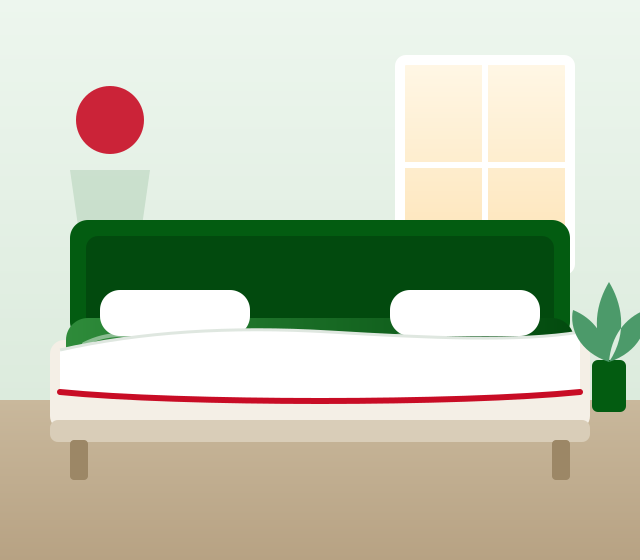

Spécialiste du lit à eau depuis 1994
Lit à eau et literie ergonomique : le confort qui soulage votre dos
Depuis 1988, La Maison du Dos conseille, livre et installe des literies qui soutiennent chaque courbe de votre corps : lits à eau thermorégulés, matelas à suspension air réglables et linge de lit Hefel.
- 35+ ansd'expertise literie
- 7j/7conseil de 9h à 21h
- Europelivraison & installation

- Livraison & installationpar nos équipes, partout en Europe
- Reprise de l'ancienne literieon s'occupe de tout
- Suivi technique & SAVun interlocuteur dédié
- Paiement sécuriséCB, virement, plusieurs fois
Nos univers
Trouvez la literie faite pour votre dos
Chaque dos est unique. Nous sélectionnons des solutions de couchage qui s'adaptent à votre morphologie, à vos douleurs et à votre façon de dormir.
-
Lits à eau
Un ou deux matelas thermorégulés, du flottant au très stabilisé, pour un soutien sans point de pression.
Voir les lits à eau -
Matelas à eau légers
Le confort de l'eau dans votre lit actuel, sans structure lourde.
Découvrir -
Matelas à suspension air
Fermeté réglable à la télécommande, côté par côté.
Découvrir -
Surmatelas
Latex, mousse ou gel viscoélastique pour affiner votre accueil.
Découvrir -
Linge de lit Hefel
Couettes, draps-housses et oreillers autrichiens, importés depuis 1997.
Découvrir

Le lit à eau, notre spécialité
Pourquoi un lit à eau soulage-t-il le dos ?
Contrairement à un matelas classique qui repousse le corps, l'eau l'accueille. Le poids se répartit sur toute la surface : la colonne vertébrale reste alignée et les muscles se détendent vraiment.
- Zéro point de pression sur les épaules et le bassin, moins de retournements la nuit.
- Chaleur douce et réglable qui aide à relâcher les tensions musculaires.
- Hygiène optimale : housse lavable, pas d'acariens au cœur du matelas.
- Stabilisation sur mesure, du flottant au quasi-ferme, selon votre morphologie.
Sélection
Nos incontournables
Nouvelle génération
La fermeté idéale, réglée d'un geste
Nos matelas à suspension air s'associent à un surmatelas latex, mousse ou gel viscoélastique. Chaque dormeur ajuste sa fermeté à la télécommande, sans compromis pour l'autre.
Découvrir la suspension air- 1Base à suspension airChambres d'air indépendantes, gonflage silencieux.
- 2Surmatelas au choixLatex, mousse ou gel viscoélastique.
- 3Réglage à la télécommandeFermeté indépendante côté gauche / côté droit.
Accompagnement
De votre premier appel à votre première nuit
- 01
Conseil personnalisé
Un spécialiste analyse vos besoins, vos douleurs et votre morphologie, par téléphone ou WhatsApp, 7j/7.
- 02
Devis sur mesure
Dimensions, stabilisation, surmatelas : vous recevez une proposition claire et détaillée.
- 03
Livraison & installation
Nos équipes installent votre literie chez vous et reprennent l'ancienne sur demande.
- 04
Suivi dans la durée
Suivi technique et service après-vente assurés directement par La Maison du Dos.
Qui sommes-nous
Une maison familiale dédiée au confort du dos depuis 1988
Installée à Epizon, en Haute-Marne, La Maison du Dos s'est spécialisée dans le lit à eau dès 1994. Nous sélectionnons des literies de qualité avec un objectif simple : apporter un vrai confort à chacun, et soulager celles et ceux qui souffrent du dos.
Importateur du fabricant autrichien Hefel depuis 1997, nous complétons chaque literie avec des couettes, draps-housses et oreillers aux fibres naturelles et respirantes.
Découvrir notre histoire- 1988
- création de la maison
- 1994
- spécialiste du lit à eau
- 1997
- partenaire Hefel
- 7j/7
- service client 9h–21h
Avis clients
Ils dorment mieux, ils en parlent
Nos clients partagent leur expérience en toute transparence sur Trustpilot.
Lire les avis sur TrustpilotQuestions fréquentes
Tout savoir avant de choisir
Un lit à eau est-il adapté au mal de dos ?
Le matelas à eau épouse la forme du corps et répartit le poids de façon homogène, ce qui limite les points de pression sur les épaules, le bassin et la colonne. Nos conseillers vous aident à choisir le niveau de stabilisation adapté à votre morphologie.
Livrez-vous et installez-vous le lit à domicile ?
Oui. Nous livrons et installons nos lits dans toute l'Europe, avec reprise de l'ancienne literie sur demande. Le suivi technique et le service après-vente sont assurés par La Maison du Dos.
Quelle différence entre matelas à eau et matelas à suspension air ?
Le matelas à eau est thermorégulé et offre un soutien flottant. Le matelas à suspension air, associé à un surmatelas latex, mousse ou gel viscoélastique, permet de régler la fermeté à la télécommande, côté par côté.
Quel entretien pour un matelas à eau ?
L'entretien est simple : un conditionneur à ajouter dans l'eau une fois par an et un nettoyage régulier de la housse. Nous vous accompagnons avec un suivi technique après l'installation.
Comment obtenir un devis personnalisé ?
Remplissez notre formulaire de devis en ligne, appelez le 03 25 04 20 19 (9h–21h, 7j/7) ou écrivez-nous sur WhatsApp. Un conseiller spécialisé vous répond rapidement.
Un projet de literie ? Parlons-en.
Un spécialiste vous répond 7 jours sur 7, de 9h à 21h.